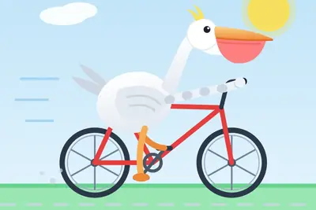
其他AI 每日新聞彙整
全部主題
其他
4 家媒體報導mistrallargemodel
Mistral’s new 1T model aims to leapfrog closed and open rivals
French AI lab Mistral AI has released Mistral Large 4, a new large multimodal model aiming to leapfrog both American and Chinese rivals.
- Simon Willison llm-mistral 0.16
- Simon Willison Introducing Mistral Large 4: Le chonk
- Simon Willison Mistral Large 4
- TechCrunch AI Mistral’s new 1T model aims to leapfrog closed and open rivals
- IT之家 宣称“欧美最强开源模型”：Mistral AI 发布 Mistral Large 4 公开预览版，月底开放权重
- ZDNet AI Mistral’s new Le Chonk model brings AI cybersecurity to your business – and you control it
2 家媒體報導mathematicssharingprogress
OpenAI drops another batch of mathematical breakthroughs
OpenAI has revealed solutions to a number of long-standing mathematics problems produced by an unreleased frontier model in a batch of 722 manuscripts, covering 372 result families that group related papers. It extends a run of breakthroughs that have both impressed and unsettled
2 家媒體報導freeflashgemini
Use Gemini for free? You’ll soon be limited to its weakest AI model
Google is cutting off free users from the Flash and Pro models. AI Plus subscribers are losing out too
2 家媒體報導alexaamazonplus
亚马逊 Alexa Echo 智能音箱出现诡异 Bug：毫无征兆哼唱“啦啦啦”数分钟，官方承诺修复
IT之家 10 月 6 日消息，据科技媒体 Android Authority 今天报道，部分用户反馈，亚马逊 Alexa Plus 人工智能语音助手最近出现颇为诡异的 Bug：当你正常和 Alexa 对话时，音箱那头的语音助手突然会卡住，然后不停地哼唱“啦啦啦”数分钟。 IT之家从原报道获悉，过去几周许多用户已经在 Reddit 论坛反馈相同问题， 涉及多种型号的 Echo 系列智能音箱 。有用户尝试在 Bug 发生后询问 Alexa 为何会哼唱“啦啦啦”，Alexa 就像失忆了一样，完全不知道自己刚刚说了什么。 亚马逊发言人后续表示，公司已确认该漏洞
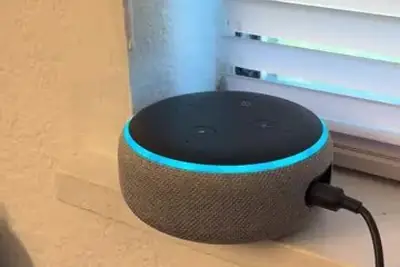
2 家媒體報導ghostcoreagent
新創Ghost打造AI代理人專用個人電腦，讓模型與記憶常駐本機
2025年成立的AI硬體新創Ghost周一（10/5）正式推出首款AI代理人專用個人電腦Core，標榜可讓AI模型、代理人與長期記憶全在使用者自己的硬體上執行，而無需將大量個人資料交給雲端AI業者。Core售價3,499美元，首批預計在10月底出貨。
- TechOrange 科技報橘 為何不直接用 Mac mini？Ghost 為個人 Agent 造專用電腦，19 歲創辦人獲 a16z 領投
- iThome 新創Ghost打造AI代理人專用個人電腦，讓模型與記憶常駐本機
2 家媒體報導deepseekreflectionbeam
美國 AI 反攻中國開放模型！Reflection AI 背靠輝達 推首款模型 Beam 迎戰 DeepSeek、Kimi
Reflection 希望透過持續擴大強化學習及推理效率，縮小美國與中國在開放權重 AI 模型領域的差距。
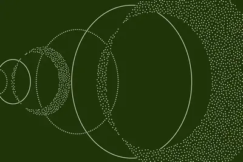
xaimusk
前妻评马斯克：于混乱之中如鱼得水，将所有挑战视作生死考验
IT之家 10 月 7 日消息，对于埃隆 · 马斯克（Elon Musk）而言，混乱或许并不只是一种管理风格。他的前妻表示，身处混乱之中才会让他觉得自在。 IT之家注意到，贾斯汀 · 马斯克（Justine Musk）在周二发布的一段预告片中，讲述了这位亿万富翁对高强度生活的偏好。这段预告片是卡拉 · 斯威舍（Kara Swisher）为她与电影人亚历克斯 · 吉布尼（Alex Gibney）的访谈所做的，发布于吉布尼的纪录片《马斯克》（MUSK）上映之前。 谈及自己的前夫，贾斯汀 · 马斯克向斯威舍说道：“我曾经形容过他，他就像是会纵身跳下悬崖，然后在
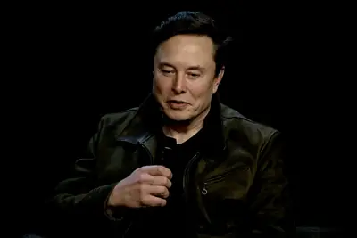
hbmchip2026
AI客戶加價、簽長約搶產能 矽格不排除再上修2026資本支出
矽格攜手子公司台星科於10月6日召開聯合法說。展望後市，矽格總經理葉燦鍊表示，受惠於AI相關CPU、GPU、特用晶片（ASIC／ㄢ、矽光子、記憶體應用需求攀升，公司產...
- DIGITIMES AI客戶加價、簽長約搶產能 矽格不排除再上修2026資本支出
huaweinpocompute
華為押注NPO取代CPO？ 徐直軍：成本、良率與維護等是抉擇關鍵
AI算力持續擴大，光互連逐漸成為AI伺服器與超大型AI叢集的關鍵技術。華為近期公開說明其AI基礎設施布局時，罕見完整談及近封裝光學（NPO）策略，並明確表示，在工程...
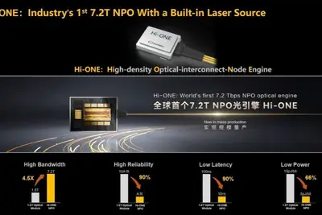
- DIGITIMES 華為押注NPO取代CPO？ 徐直軍：成本、良率與維護等是抉擇關鍵
marvellnvidiaserdes
NVIDIA、博通與Marvell都在搶 聯發科美國布局左右AI網通成敗
聯發科近年持續搶攻AI網通基建商機，除了既有優勢的無線端，有線端也與旗下達發持續合作並進，從乙太網、光通訊、交換器一路到SerDes等各類高速傳輸技術，已有完整布...
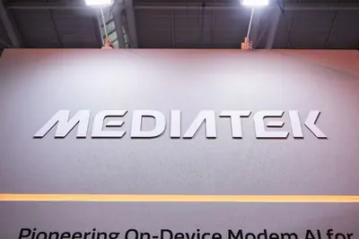
- DIGITIMES NVIDIA、博通與Marvell都在搶 聯發科美國布局左右AI網通成敗
hypairion2028air
法國加速AI導入空戰 HypAIRion拚2028年有人無人協同飛行
法國航空與太空軍（French Air and Space Force；AAE）日前攜手法國軍備總局（DGA）及國防人工智慧局（AMIAD），推動2026年7月啟動的HypAIRion計畫，預計20...
- DIGITIMES 法國加速AI導入空戰 HypAIRion拚2028年有人無人協同飛行
datacenteramydr.chip
【Amy & Dr.Chip】Google太空測試TPU 看好太空建AI資料中心
- DIGITIMES 【Amy & Dr.Chip】Google太空測試TPU 看好太空建AI資料中心
telchip2026
AI投資加速、客戶擴產不停 TEL 2026年度營益拚新高
半導體設備大廠東京威力科創（Tokyo Electron；TEL）財務長川本弘表示，人工智慧（AI）需求確實存在且十分強勁，這股需求將帶動截至2027年3月底為止的2026年度營...
- DIGITIMES AI投資加速、客戶擴產不停 TEL 2026年度營益拚新高
victoriakimquoting
Quoting Victoria Kim
Since the Medicare breach, OpenAI has put in place additional monitoring to allow “immediate intervention” by staff to stop training if the company’s models access the internet in ways they’re not supposed to, Mr. Kwon [chief strategy officer at OpenAI] said. — Victoria Kim , Rep
- Simon Willison Quoting Victoria Kim
2026chip
AI 颠覆担忧消退，美国软件股创 2026 年阶段新高
IT之家 10 月 7 日消息，据路透社报道，受盈利预期大幅上调的推动，美国软件类股票正创出 2026 年阶段新高；多位分析师据此认为，此前市场对于人工智能将颠覆整个软件行业的担忧很大程度上被夸大了。 IT之家注意到，标普 500 软件与服务指数周二上涨 1.3%，创下自 2025 年 11 月以来的最高点位。在此之前，该指数在 7‑9 月这个季度录得自 2020 年第二季度之后最大的季度涨幅。 赛富时（Salesforce）、ServiceNow、埃森哲（Accenture）等软件企业交出亮眼的财报业绩，再加上各家企业与 AI 实验室达成各类合作，助推
computeintelagmai
OpenAI 发布又一批 AI 数学研究成果，攻破数百个悬而未决难题
IT之家 10 月 7 日消息，OpenAI 在一批包含 722 份手稿、涵盖 372 个结果家族的文件中，公布了某款未发布的前沿模型解决的多项长期存在的数学难题。 IT之家注意到，这一举措延续了其一系列突破性成果，这些成果既给数学界部分人士留下了深刻印象，也引发了不安，同时还带来了关于研究伦理和学术行为的疑问。据负责以负责任的方式传达这些成果、新成立的精英数学家独立咨询小组 AGMAI 介绍，此次公布的内容包含对“数百个”未解决问题的解答。 数周以来外界一直在期待这批成果，不过在此之前，OpenAI 始终没有说明模型究竟解决了哪些问题，也没有给出确切的

robot
不知不覺滿口「AI 腔」？聊天機器人正悄悄改寫人類的表達方式
人工智慧（AI）聊天機器人不僅翻轉了人類運用科技的模式，如今更悄悄滲透進我們日常交流的語氣與結構中。近期的社會 […]
- 科技新報 TechNews 不知不覺滿口「AI 腔」？聊天機器人正悄悄改寫人類的表達方式
regulation
落实特朗普行政令，美国司法部要求员工改称 AI 为“超级智能”
IT之家 10 月 7 日消息，路透社看到的一份备忘录显示，美国司法部于当地时间周二向内部工作人员下达指示：在绝大多数场合提及这项技术时（包括法庭相关文书当中），应当使用“超级智能”，而不再使用“人工智能”一词。 代理副总检察长特伦特 · 麦科特（Trent McCotter）签发了这项指令。此前一周，美国总统唐纳德 · 特朗普（Donald Trump）已经签署行政命令，要求联邦各机构完成用词替换；特朗普表示，新叫法可以更加贴切地反映这项飞速发展技术所具备的潜力。 这份备忘录写明，司法部员工在对外沟通、政策文件以及其余各类官方记录当中，应当“在法律许可
amdchipspacex
消息称 SpaceX 计划募资 400 亿美元，用于采购英伟达 AI 芯片
IT之家 10 月 7 日消息，据《金融时报》报道，埃隆 · 马斯克（Elon Musk）旗下的 SpaceX 正计划募资 400 亿美元 （IT之家注：现汇率约合 2,685.79 亿元人民币） 。本轮融资由阿波罗全球管理（Apollo Global Management）牵头，资金将用于采购英伟达芯片。这家同时涉足人工智能与火箭业务的企业正在加大投入，押注该芯片厂商的先进技术。 据知情人士透露，该公司计划通过银行贷款筹集约 100 亿美元 （现汇率约合 671.45 亿元人民币） ，再发行 300 亿美元 （现汇率约合 2,014.34 亿元人民币）
AI 改變軟體收費邏輯，舊財務架構難應付「以量計價」新挑戰
人工智慧正在改寫軟體產業的收費邏輯，同時也讓許多企業的財務基礎設施暴露出明顯的落差。軟體定價從傳統固定訂閱，轉 […]
- 科技新報 TechNews AI 改變軟體收費邏輯，舊財務架構難應付「以量計價」新挑戰
libreoffice
LibreOffice：短期内默认版本不内置 AI 功能，用户可通过扩展自行接入本地模型
IT之家 10 月 7 日消息，如果你正在寻找一款不使用人工智能的文档编辑软件，LibreOffice 或许正是适合你的选择。 开发这款开源文档编辑软件 LibreOffice 的非营利机构文档基金会（The Document Foundation），于本周在一篇博客文章中表示，该机构并非一味排斥人工智能，但在可预见的未来，“不会”在自家软件当中加入人工智能功能。 这篇博客发布的几周之前，也就是八月下旬，LibreOffice 刚刚推出了最新版本。当时这家非营利组织就已经重申，这套软件“不包含任何生成式人工智能功能”。 LibreOffice 当时称，这
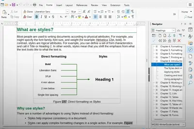
anthropic
已挖出十几万漏洞，Anthropic 向更多安全团队开放其最强 Claude 模型
IT之家 10 月 7 日消息，据路透社报道，Anthropic 正在扩大一项计划，允许经过审核的网络安全专业人员在更少安全防护的情况下测试其最强大的人工智能模型，此前该公司的“玻璃翼计划（Project Glasswing）”今年已帮助发现了超过 10 万个软件漏洞。 据IT之家了解，玻璃翼计划旨在保障全球关键软件的安全。该计划的合作方在 4 月至 7 月期间，至少找到了 129000 个已经核实的漏洞。而 Anthropic 自身开展的开源扫描工作，在 4 月到 10 月之间又额外发现了 5500 个漏洞。 到目前为止，已有超过 33000 个漏洞被
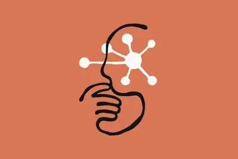
embeddinggemma7.4191
谷歌推出 EmbeddingGemma 2：支持多模态、7.4 亿参数量化手机端运行只需 191MB 内存
IT之家 10 月 7 日消息，去年谷歌推出了 EmbeddingGemma，为开发者提供轻量高质量的文本嵌入方案，下载量已超 2000 万次，广泛应用于端侧搜索工具和隐私优先检索增强生成（ RAG ）管线。 如今谷歌正式推出 EmbeddingGemma 2 ，将能力从文本扩展到代码、图像、视频、音频，可将这些内容统一映射到同一个嵌入空间。 IT之家援引博文介绍，该模型基于 Gemma 4 架构开发，采用商业友好的 Apache 2.0 许可发布，总参数为 7.4 亿，非常适合端侧推理。 EmbeddingGemma 2 基于 Gemini 嵌入模型同

ex-rampengineersplatform
Ex-Ramp engineers raise $20M for platform Melius after scrapping their first product
Instead of helping marketers manage and optimize ad spend, the company is focusing on building the tools that generate the creative assets and campaigns.
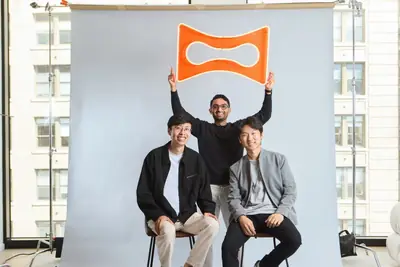
ptc226
【科技早餐】OpenAI 代理遭指未授權活動，維基媒體揭大量請求疑涉服務中斷
【科技早餐】今天精選 7 則國內外重要科技新聞。 ＊維基媒體發現 OpenAI 代理未授權活動，流量疑涉服務中斷 維基百科營運機構維基媒體基金會（Wikimedia Foundation）10 月 5 日公布調查，表示旗下平台出現它認為由 OpenAI 運作的 AI 代理活動，包括未經批准的編輯、未成功的線上筆記工具入侵嘗試，以及大量資料下載。基金會指出，編輯幾乎都發生在測試區，未刊登至一般讀者可見頁面，也未發現系統或資料遭到侵害的證據。依社群政策，機器人編輯須披露身分並取得批准，這些活動未完成相關程序。 基金會另發現數百萬次自動請求，以及對 Wikid

- TechOrange 科技報橘 【科技早餐】OpenAI 代理遭指未授權活動，維基媒體揭大量請求疑涉服務中斷
decisionsapibeta
Decisions API is in public beta
Article URL: https://developers.openai.com/api/docs/guides/decisions Comments URL: https://news.ycombinator.com/item?id=49984025 Points: 101 # Comments: 36
- Hacker News (100+) Decisions API is in public beta
watermarkoutputsonly
OpenAI will watermark ChatGPT outputs by default—but only in the EU
Like other solutions, it is not especially reliable, and it's easy to circumvent.
decisionmoderationcontent
How AI decision models could change content moderation
On Tuesday, Musubi announced a lightweight decision model made for real-time moderation called PolicyLM-1.7B, released with open weights.
- TechCrunch AI How AI decision models could change content moderation
lambdaaheadplanned
AI computing startup Lambda to raise $4B ahead of planned IPO
Nvidia-backed Lambda is raising up to $4 billion at a $14.5 billion pre-money valuation ahead of a planned 2027 IPO, led by Coatue and Blackstone.
embeddingembeddinggemmalightweight
EmbeddingGemma 2: an open, lightweight multimodal embedding model
gettingagentsnext
The next hurdle for AI agents: getting websites to let them in
Personal AI agents promise to shop, book flights, and make reservations for you. But deliberate blocks and anti-bot defenses are getting in the way, leaving consumers caught in the middle. A new standard aims to help.
roastscreatorssends
‘Artificial’ Roasts AI’s Creators—and Sends a Dark Warning About Its Dangers
From their dorky parties to their weird walks, the movie holds OpenAI CEO Sam Altman and other stakeholders with contempt, while demonstrating their recklessness.
assistantpersonalhark
Hark releases an AI personal assistant with a focus on privacy
The AI lab's personal assistant is an operating system from the future designed to compete with Muse, Dots, and Instinct.
pissingbunchmathematicians
OpenAI Is Pissing Off a Bunch of Mathematicians—Again
“There’s a perception of mobster behavior” from leading AI companies, one mathematician tells WIRED as OpenAI prepares to release more than 100 new solutions to unsolved problems.
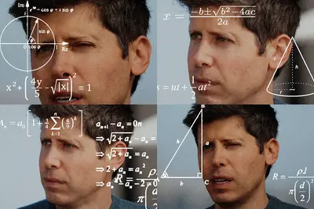
office2021support
Office 2021 support ends this month – you have 5 options
Microsoft is ending support and updates for Office 2021 on October 13. What does that mean, and what are your alternatives?
mirrorparticleworld
Mirror Particle is building a ‘world model’ of human behavior
Mirror Particle will launch at TechCrunch Disrupt's Startup Battlefield 200 with a world model built from scratch to predict human behavior, arguing that LLM role-play falls short for market research and brand strategy.
definitionrecordingeither
We can’t just change the definition of ‘recording’
With AI hardware, tech companies are pushing the definition of what does and doesn't constitute a recording. For most of gadget history, it'd be reasonable to assume that a device with a microphone or camera is either recording you or it isn't; it's either on or off, without much
- The Verge AI We can’t just change the definition of ‘recording’
givingstartupsyear
Anthropic is giving startups a free year of Claude Team and $1,000 in credits
"We created this program because we believe the benefits of AI will reach most people through the companies that build on top of models, rather than through the models alone."
atlassianpartnershipknowledge
Atlassian and OpenAI expand partnership to turn enterprise knowledge into action
Atlassian and OpenAI are expanding their partnership to connect frontier models with enterprise knowledge and help teams plan, build, and deliver work.
softwarefeaturelibreoffice
LibreOffice says ‘no AI’ is now a software feature
The maker of the open source document editor says it has no plans to add AI to its software's default configuration, citing user privacy.
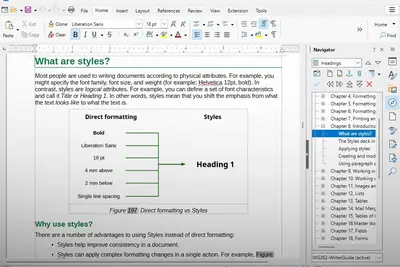
- TechCrunch AI LibreOffice says ‘no AI’ is now a software feature